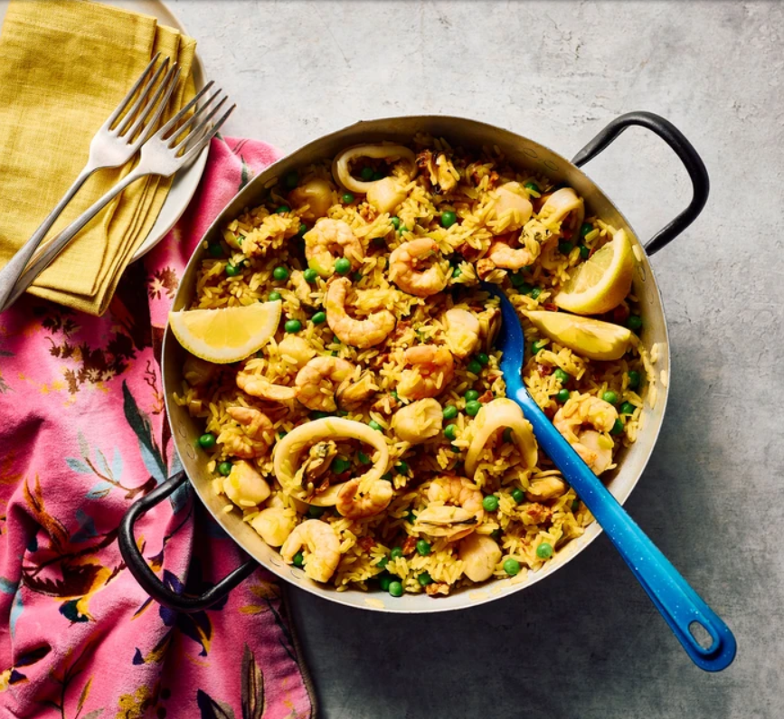

Main
Seafood rice

Ingredients
- 1 tbsp olive oil
- 1 leek
- 110g pack chorizo
- 1 tsp turmeric
- 300g long grain rice
- 1l hot fish or chicken stock
- 200g frozen peas
- 400g frozen seafood mix
Method
- Heat the oil in a deep frying pan, then soften the leek for 5 mins without browning. Add the chorizo and fry until it releases its oils. Stir in the turmeric and rice until coated by the oils, then pour in the stock. Bring to the boil, then simmer for 15 mins, stirring occasionally.
- Tip in the peas and cook for 5 mins, then stir in the seafood to heat through for a final 1-2 mins cooking or until rice is cooked. Check for seasoning and serve immediately with lemon wedges.